7. 动作
动作滑块究竟改变什么
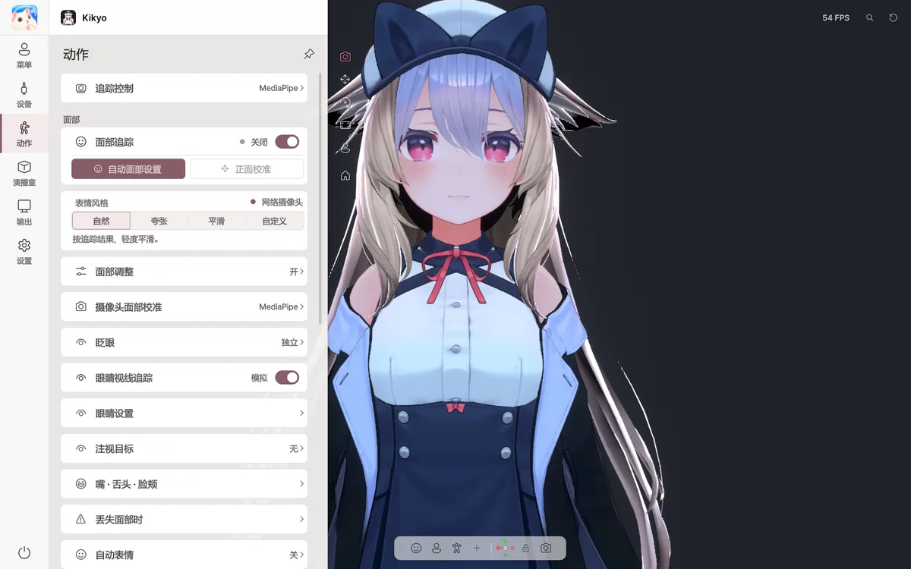
| 选项 | 减小／关闭 | 增大／开启 |
|---|---|---|
| 表情敏感度 | 细微表情不明显、噪声较少 | 小变化也明显，但有时过度夸张 |
| 表情平滑 | 眼睛和嘴反应迅速但可能抖动 | 动作更柔和，但眨眼和说话可能延迟 |
| 口型强度 | 张嘴幅度减小 | 张嘴幅度变大，某些模型可能不自然 |
| 眨眼敏感度／自动眨眼 | 主要按真实输入 | 更容易触发眨眼或在待机时自动眨眼 |
| 摄像头手臂动态／旧版 | 旧版保留更接近 1.1.6 的方式 | 动态采用新的手臂/距离估算，效果取决于摄像头环境 |
| 手部平滑 | 反应快但追踪噪声较大 | 减少细小抖动，但快速动作有跟随延迟 |
| 手部深度估算（实验） | 以较稳定的平面动作为主 | 估算手向前伸出的距离，但可能扭曲手腕或手臂 |
| 进入 AFK 前等待 | 短暂失去追踪也较快待机 | 忽略短时丢帧，较久失踪才进入 AFK |
| AFK 进入/恢复时长 | 更快切换表情与动作 | 过渡更柔和，但恢复较慢 |
| 待机呼吸/眨眼 | 静态休息 | 没有实时输入时也保留小幅自然动作 |
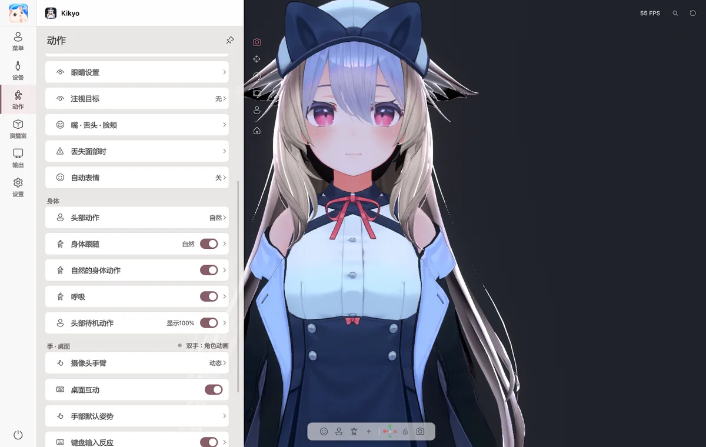
iPhone 显示连接不代表每一帧都有新的人脸追踪数据。如果脸冻结，请检查原始追踪信号、重复数据、AFK 时间和正面校准。保存姿势里的面部、头部、手臂、手指、躯干五项追踪权限独立保存。例如头部关闭、面部开启时，头的方向保持姿势，表情继续实时移动。
视线对象选摄像机、特定人物或关闭，决定眼睛/头部看向哪里。提高视线强度会更积极地跟随目标，降低则保留更多原本追踪动作。实验性的 Look At IK 可能默认关闭；如果头部转动异常，应关闭并重新检查。
设定面部、身体和手的运动方式。设置按角色分别保存。
面部追踪
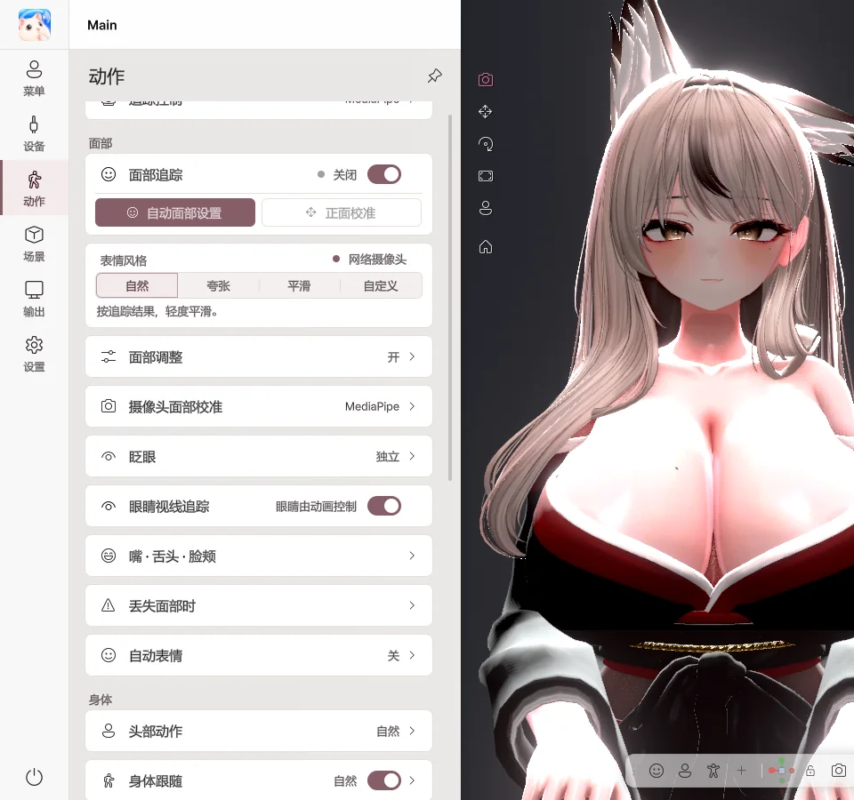
- 镜像 — 像照镜子一样朝同一侧移动。
- 手臂 · 手部 · 手指 — 用摄像头驱动各个部位。
- 手势 → 表情 — 角色的表情会随手形变化。
- 面部追踪 — 开启或关闭面部表情追踪。
表情的驱动方式
面部表情 完全按照角色中已有的设置来驱动。 Avatar Live 不会为角色新建或转换表情。
| 角色设置 | 驱动方式 |
|---|---|
| 有 VRCFaceTracking（VRCFT） 参数 | 通过角色的 VRCFT 设置驱动。 |
| 有 52 个 ARKit 形态键（Perfect Sync） | 直接驱动这些形态键。 |
| 两者都没有 | 以眨眼、口型同步等角色自带的基本表情为主，细腻的表情可能无法呈现。 |
- 即使摄像头或 iPhone 以 52 个表情为单位读取，角色中没有对应参数或形态键的表情也不会显示。
- 如果角色只有部分形态键，则只驱动已有的部分。
今后计划改进为：识别全部 52 个表情并对应到角色上，或者让没有这些设置的角色也能直接绑定到面部。时间可能会有变动。
自动面部设置
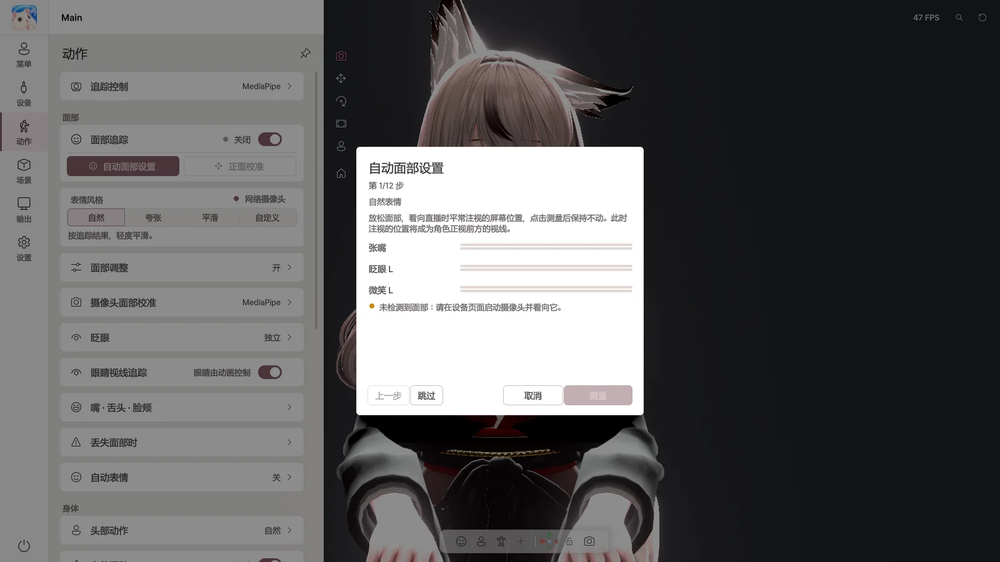
点击 自动面部设置 按钮即开始校准。请按照画面引导做出表情，然后点击 测量。最后点击 应用，表情就会按照你的面部进行调整。
第一步中注视的位置会成为角色的正面视线。请像直播时一样看着屏幕。
面部调整
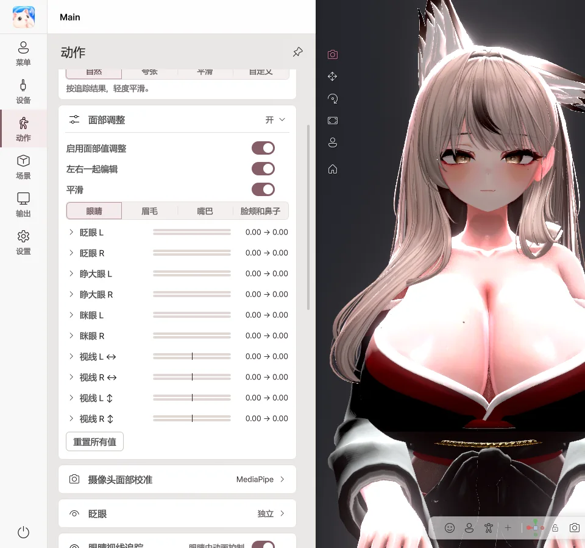
- 逐项调整眼睛、眉毛、嘴、脸颊表情的幅度。
- 将滑块向右拖动，该表情的幅度就会更大。
- 开启 左右一起编辑 后，两侧会一起变化。
- 开启 平滑 后，可减少表情抖动。
眨眼 · 嘴巴
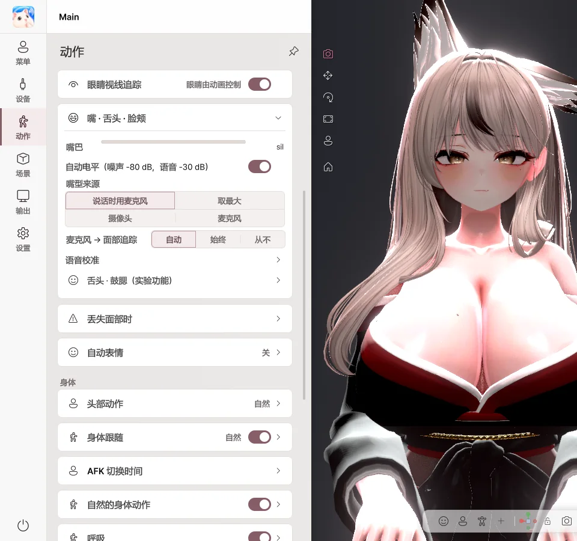
- 眨眼模式 — 独立 便于眨单眼，同步 则让双眼一起闭合。
- 眼睛视线追踪 — 眼球会跟随你的视线。
- 自动电平 — 根据声音大小自动调整嘴巴张合的幅度。
- 语音校准 — 点击元音按钮并发音，即可匹配你的声音。
- 舌头 · 鼓腮 — 用按钮或快捷键伸出舌头或鼓起脸颊。
目光与看向镜头
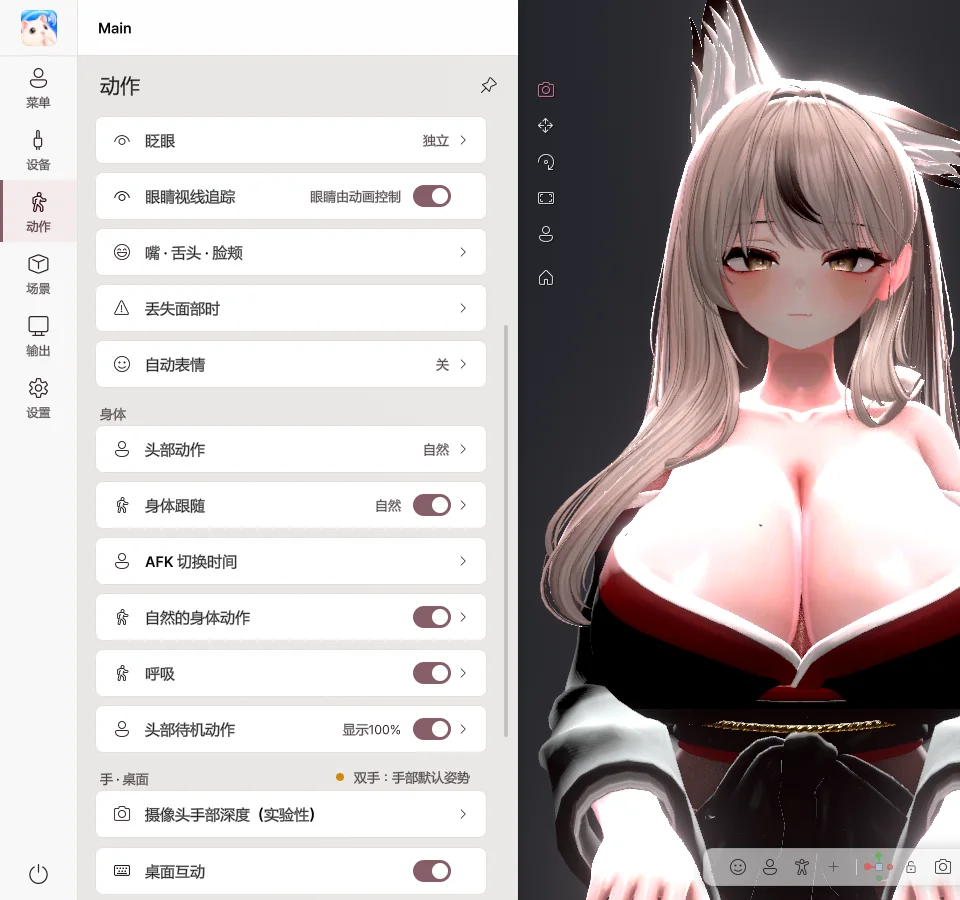
在动作 › 面部中调整视线追踪。启用眼睛看镜头后，角色会看向镜头。即使某个姿势的面部追踪为OFF，此功能也可以独立生效。头部追踪另有独立开关；看向镜头不会自动恢复其他面部表情。
身体
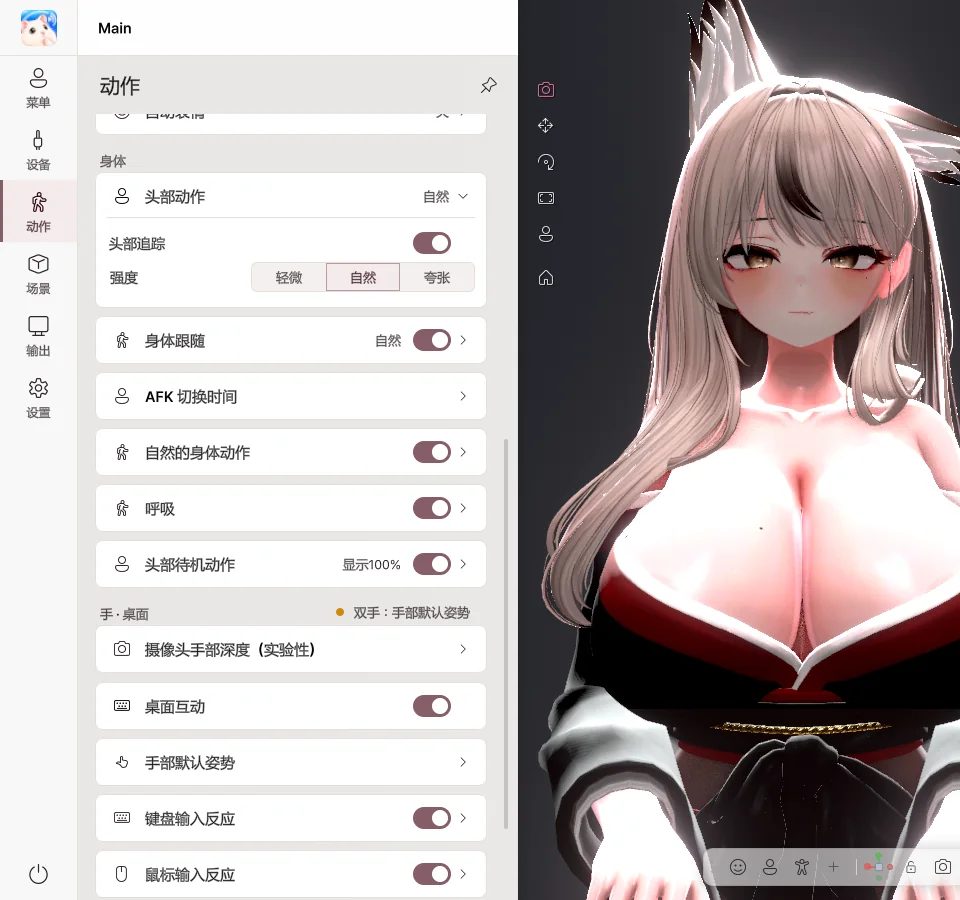
- 头部动作 — 从 轻微 · 自然 · 夸张 中选择。
- 身体跟随 — 转动头部时，身体也会自然地跟随。
- 自然的身体动作 · 呼吸 — 即使静止不动，也会像活着一样动起来。
- 上半身 — 开启摄像头全身后，会根据肩部动作让上半身倾斜和转动。在看不到腿部的桌前也可以使用。
- 全身 — 用摄像头或 VMC 跟随躯干、腿部以及坐下 · 站立。请参考 设备 › 全身 · 手指关节。
AFK过渡时间与追踪丢失
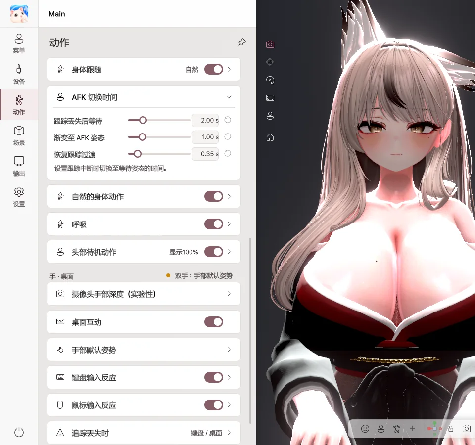
AFK时间已从设置页面移至动作 › 身体。每个角色均可通过滑块或直接输入数字分别设置：
- 追踪丢失等待：追踪暂时中断后，进入AFK前等待的时间
- 进入AFK过渡：平滑切换到待机姿势的时间
- 追踪恢复：重新收到追踪信号后恢复正常动作的时间
原有的角色独立数值会保留。默认姿势、追踪丢失时的待机姿势和待机表情分别设置，参见 姿势编辑。
摄像头手部深度估算（实验性）
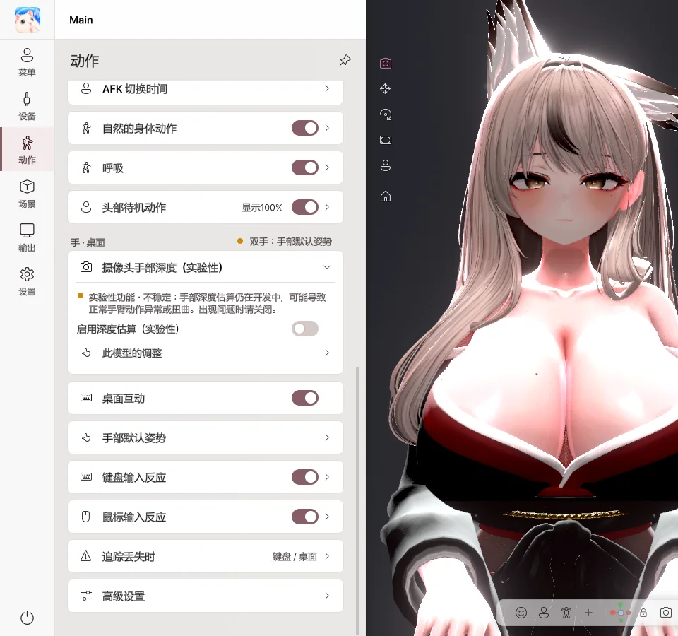
该功能尝试估算双手向摄像头伸出的距离。根据摄像头环境，手臂或手腕可能扭曲、抖动。普通使用建议保持OFF；追踪不稳定时请先关闭此选项，并检查手部防抖设置。
手 · 桌面
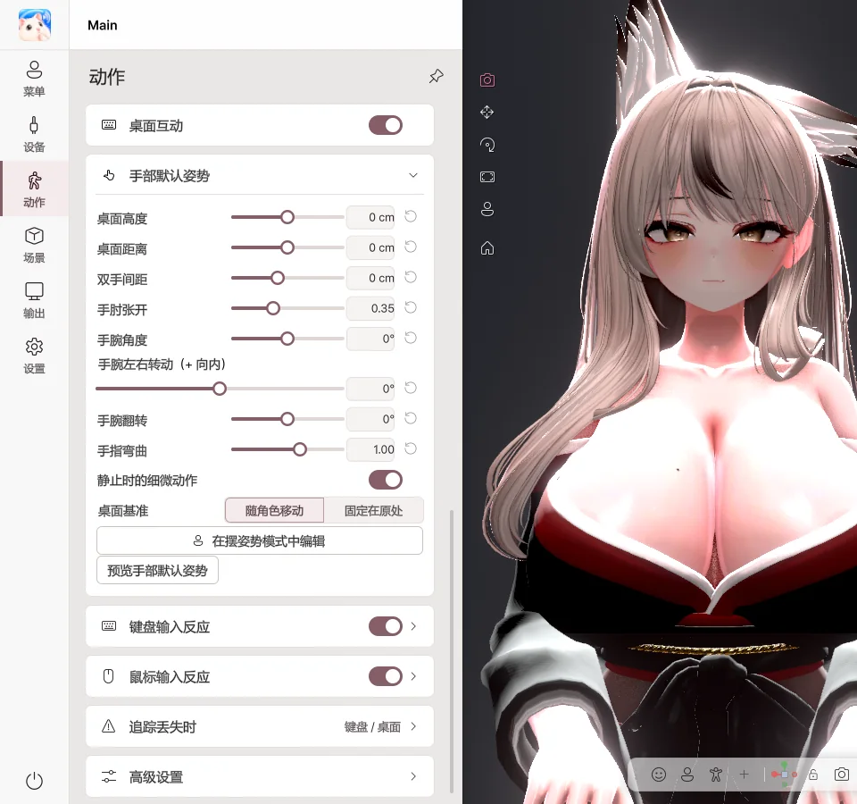
- 桌面互动 — 摄像头看不到手时，角色的手会配合键盘和鼠标操作而动。
- 手部默认姿势 — 调整桌面高度、双手间距和手腕角度。
- 键盘 · 鼠标输入反应 — 设定打字和鼠标动作的幅度。
- 放下手后会立即进入桌面姿势，再次抬起时会平滑地回到追踪。即使身体大幅摇晃或处于坐姿，手肘也会自然地跟随。
- 在摆姿势中制作的手臂 · 手部姿势，可以通过 设为桌面姿势 来使用（Pro）。
键盘输入仅用于驱动角色的手，不会保存或发送输入的文字。
💡 舌头 · 鼓腮的摄像头检测是实验性功能。